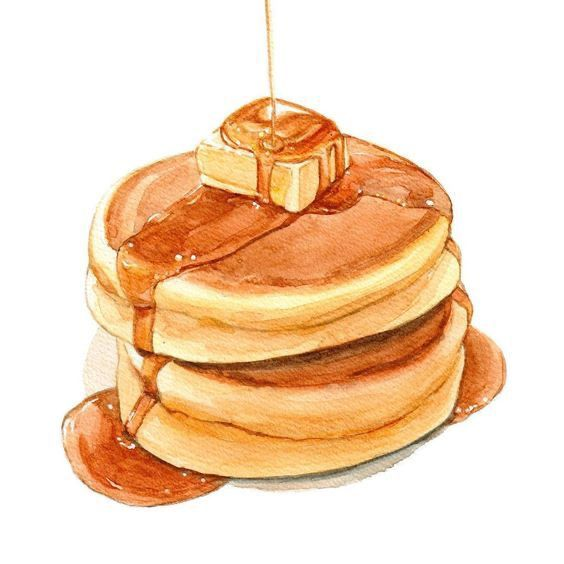

Pancakes

Pancakes are a popular breakfast dish that are soft, fluffy, and typically served in stacks. They are cooked on a griddle or frying pan until golden brown and are often enjoyed with various toppings, such as syrup, fruit, or whipped cream.
Ingredients
- Flour
- Sugar
- Baking powder
- Salt
- Milk
- Eggs
- Butter
Steps
- In a large mixing bowl, whisk together the flour, sugar, baking powder, and salt.
- In a separate bowl, beat the eggs and then stir in the milk and melted butter.
- Pour the wet ingredients into the dry ingredients and mix until just combined.
- Heat a griddle or frying pan over medium heat and lightly grease with butter or oil.
- For each pancake, pour a ladleful of batter onto the griddle and cook until bubbles form on the surface.
- Flip the pancake and cook for another minute or until golden brown.
- Repeat with the remaining batter, stacking the pancakes as you go.
- Serve the pancakes warm with your favorite toppings. Enjoy!
Back to Home